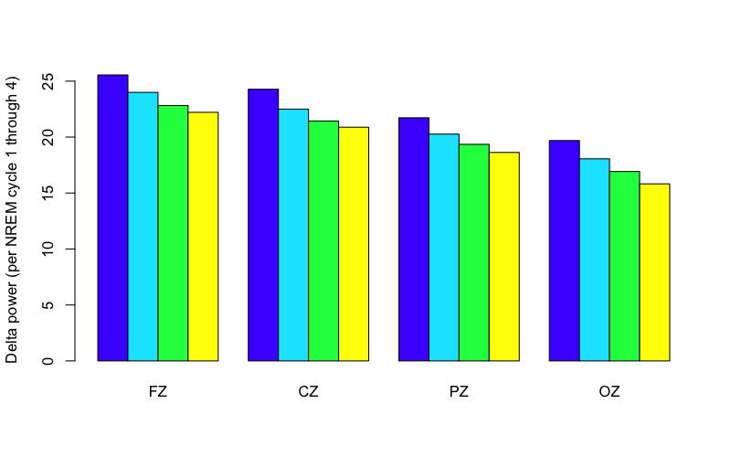
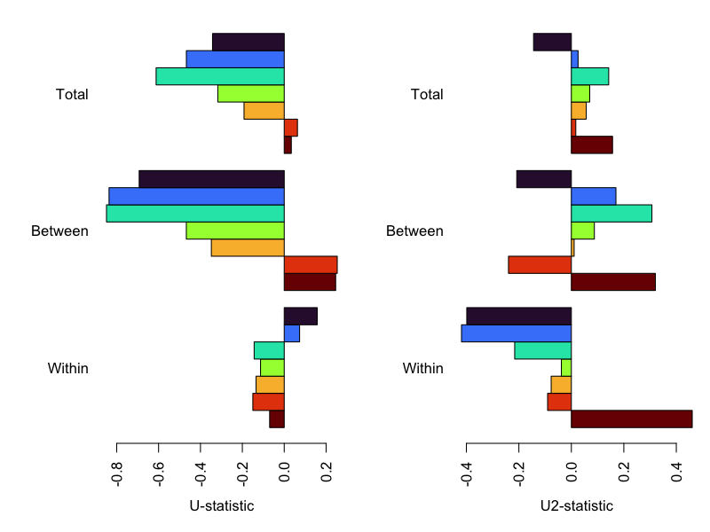
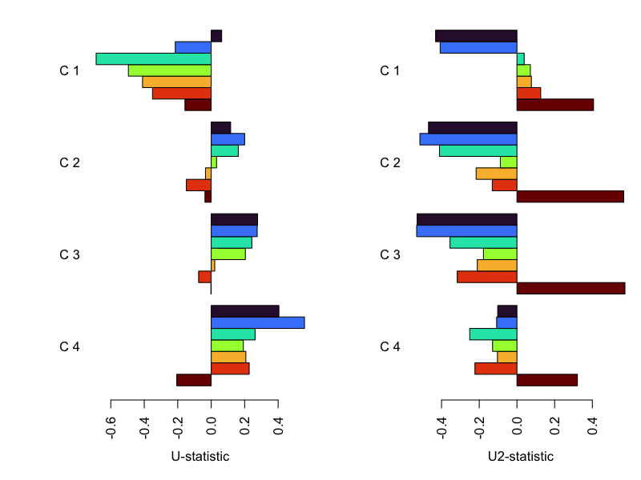
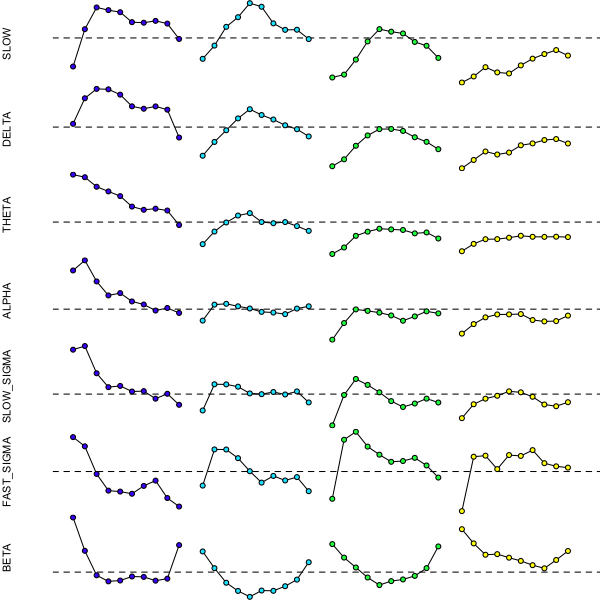

5.3. Quantifying ultradian dynamics
Luna has a number of approaches for quantifying ultradian dynamics - beyond looking at the average level of a metric. Here we'll consider two simple applications: analyses 1) stratified by NREM cycle and 2) capturing epoch-level, intra-cycle dynamics.
Cycle-level dynamics
As noted, the HYPNO command can add annotatations,
for example, that track NREM cycle status. By default, these
annotations (h_cycle_n1, h_cycle_n2 etc) are assigned to epochs
belonging to the first, second, etc, NREM cycle. For commands such as
PSD that respect any current mask,
we can use the following to calculate NREM spectral
power stratified by NREM cycle (here just for four midline channels, Fz, Cz, Pz and Oz):
luna c.lst -o out/cycles.db \
-s ' ${z=FZ,CZ,PZ,OZ}
HYPNO annot
MASK ifnot=N2,N3 & RE
CHEP-MASK sig=${z} ep-th=3,3
CHEP sig=${z} epochs & RE
MASK ifnot=h_cycle_n1
TAG P/C1
PSD sig=${z} dB
MASK ifnot=h_cycle_n2
TAG P/C2
PSD sig=${z} dB
MASK ifnot=h_cycle_n3
TAG P/C3
PSD sig=${z} dB
MASK ifnot=h_cycle_n4
TAG P/C4
PSD sig=${z} dB '
Note the use of Luna's
TAG command
to keep track of the output, i.e. across different NREM cycles, by adding what
will appear as a new factor in the output (P, for period, although we could have
chosen another label, e.g. cycle, etc).
Freeze/thaw commands
If using a wider range of commands (that interact with masks differently),
it can be safer to use the FREEZE/THAW
mechanism instead
of relying on how a given command handles masked epochs:
e.g. writing this only for the first two NREM cycles, but this
would achieve a similar thing as above:
luna c.lst 1 -o out/cycles.db \
-s ' ${z=FZ,CZ,PZ,OZ}
HYPNO annot
MASK ifnot=N2,N3 & RE
CHEP-MASK sig=${z} ep-th=3,3
CHEP sig=${z} epochs & RE
FREEZE F1
MASK ifnot=h_cycle_n1 & RE
TAG P/C1
PSD sig=${z} dB
THAW F1
MASK ifnot=h_cycle_n2 & RE
TAG P/C2
PSD sig=${z} dB
... etc ...
FREEZE/THAW).
We'll extract band power (for select bands) per NREM cycle (i.e. adding the P factor as added above by TAG):
destrat out/cycles.db +PSD \
-r CH P \
-r B/SLOW,DELTA,THETA,ALPHA,SIGMA,FAST_SIGMA,SLOW_SIGMA,BETA \
-v PSD > res/dynam.cycles
In R, we'll read these cycle-specific power values:
d <- read.table( "res/dynam.cycles" , header=T )
P (i.e. NREM cycle) as well as CH and F:
head(d)
ID B CH P PSD
1 F01 SLOW FZ C1 25.15084
2 F01 DELTA FZ C1 25.78118
3 F01 THETA FZ C1 18.03439
4 F01 ALPHA FZ C1 16.89326
5 F01 SIGMA FZ C1 12.04506
6 F01 SLOW_SIGMA FZ C1 14.70402
We can summarize cycle-, channel- and band-specific power values as follows:
res <- tapply( d$PSD , list( d$P, d$CH , d$B ) , mean )
To see whether, For example, N2 delta power is (on average) reduced over NREM cycles:
res[,,"DELTA"]
CZ FZ OZ PZ
C1 24.28065 25.55235 19.68633 21.72183
C2 22.50004 23.99429 18.05625 20.26449
C3 21.44017 22.82151 16.92743 19.35263
C4 20.88196 22.21226 15.82065 18.62762
barplot( res[ , c("FZ","CZ","PZ","OZ") , "DELTA" ] ,
beside = T , col = topo.colors(4) ,
ylab = "Delta power (per NREM cycle 1 through 4)" )

That is, we see that average per-cycle N2 delta power a) is higher in frontal regions, and b) decreases with each NREM cycle, consistent with expectations of delta power as an index of dissipating homeostatic sleep pressure.
Test, and control for age/sex, we'll merge in the demographic data:
d <- merge( d ,read.table( "work/data/aux/master.txt",header=T,stringsAsFactors=F), by="ID" )
We can then apply simple linear models, confirming that the reduction across cycles (here at CZ) is in fact statistically significant):
summary(lm( PSD ~ male + age + as.factor( P ) , data = d , subset = B == "DELTA" & CH == "CZ" ) )
Estimate Std. Error t value Pr(>|t|)
(Intercept) 29.41731 1.63769 17.963 < 2e-16 ***
male -2.02599 0.46293 -4.376 4.19e-05 ***
age -0.11344 0.04449 -2.550 0.01301 *
as.factor(P)C2 -1.78061 0.61478 -2.896 0.00505 **
as.factor(P)C3 -2.83797 0.62342 -4.552 2.22e-05 ***
as.factor(P)C4 -3.24087 0.65270 -4.965 4.76e-06 ***
Epoch-level dynamics
Luna's dynam argument can be applied to a number of commands, to
take epoch-level outputs and return a series of inter- and intra-cycle
summaries. Here we'll apply to the PSD command, based on a single
channel (CPZ) for simplicity; we'll also restrict these analyses
to a maximum of 4 NREM cycles (as fewer people have more than 4 complete NREM cycles
in this sample):
luna c.lst -o out/dynam.db \
-s ' HYPNO
MASK ifnot=N2,N3 & RE
CHEP-MASK sig=CPZ ep-th=3,3
CHEP epochs & RE
PSD sig=CPZ dynam dynam-max-cycle=4 dynam-norm-cycles=F '
When the dynam option is added to a command that supports it (e.g. PSD, PSI, COH, SPINDLES, etc),
the output will contain two additional strata, e.g. here defined by 1) VARxQD and 2) VARxQDxQ as well
as the original factors (i.e. BxCH). Briefly,
VARis in this case justPSD(i.e. spectral power)QDis the interval considered: depending on the options, this can be across the whole night, within or between NREM cyclesQis the quantile for a given interval, i.e. to show original (OS) and standardized (SS) scores over that period
In this case, we have:
destrat out/dynam.db
[PSD] : CH : 1 level(s) : NE
: : :
[PSD] : B CH : 10 level(s) : PSD RELPSD
: : :
[PSD] : B CH VAR QD : 60 level(s) : A_P2P MEAN N OMEAN SD T_P2P U U2
: : :
[PSD] : B CH VAR QD Q : 500 level(s) : OS SS
If we'd added spectrum to the PSD command, we'd have equivalent
metrics for CHxF strata too. We'll extract the main outputs here
into text files:
destrat out/dynam.db +PSD -r CH VAR B QD > res/dynam.band.1
destrat out/dynam.db +PSD -r CH VAR B Q QD > res/dynam.band.2
In R, we can review some of these metrics. The dynam module provides
simple summary statistics to quantify whether more "activity" (in this
context, higher EEG power) tends to occur relatively earlier or
later across a given period. We'll read these in:
d <- read.table("res/dynam.band.1",header=T,stringsAsFactors=F)
bands <- c("SLOW", "DELTA","THETA","ALPHA","SLOW_SIGMA","FAST_SIGMA","BETA" )
After appropriate normalization and smoothing of epoch-level power
values, the dynam module reports U and U2 metrics that reflect
the linear and quadratic coefficients for the metric (e.g. N2 delta
power) as a function of time, either across the whole night (TOT),
between NREM cycles (BETWEEN, based on the means per cycle), within
a specific NREM cycle (e.g. W_C1 for the first cycle), or the
average within-cycle effect (WITHIN), here based on cycles 1 up to
4.
We can look at the mean U metric for each band under these conditions:
r <- tapply( d$U , list( B = d$B , QD = d$QD ) , mean )
r[ bands , ]
QD
B BETWEEN TOT W_C1 W_C2 W_C3 W_C4 WITHIN
SLOW -0.693 -0.342 0.063 0.116 0.277 0.405 0.158
DELTA -0.837 -0.467 -0.215 0.200 0.275 0.557 0.073
THETA -0.849 -0.612 -0.688 0.162 0.243 0.262 -0.144
ALPHA -0.467 -0.317 -0.495 0.032 0.204 0.192 -0.113
SLOW_SIGMA -0.348 -0.192 -0.410 -0.034 0.021 0.207 -0.135
FAST_SIGMA 0.253 0.063 -0.351 -0.148 -0.075 0.227 -0.150
BETA 0.246 0.034 -0.157 -0.037 -0.002 -0.206 -0.070
Negative values imply that relative more activity happens earlier
(i.e. it decreases with increasing time); positive values imply the opposite.
We can plot these values, first for the TOT and BETWEEN (that we typically expect to
be similar to each other) as well as the WITHIN (average within NREM cycle dynamics) condition. Below
we also plot the equivalent values for U2 (the quadratic term) on the right panel:
par(mfcol=c(1,2),mar=c(5,6,1,1))
barplot( r[ rev(bands) , c( "WITHIN","BETWEEN","TOT" ) ] ,
xlab = "U-statistic" ,
beside=T , horiz= T , las=2 , col = rev(lturbo(7)) ,
names.arg = c("Within", "Between", "Total" ) )
r2 <- tapply( d$U2 , list( B = d$B , QD = d$QD ) , mean )
barplot( r2[ rev(bands) , c( "WITHIN","BETWEEN","TOT" ) ] ,
xlab = "U2-statistic" ,
beside=T , horiz= T , las=2 , col = rev(lturbo(7)) ,
names.arg = c("Within", "Between", "Total" ) )

The slower bands are in blues at the top, the faster bands (sigma, beta) are in the reds. This confirms that across the night as a whole and between cycles, we see a decrease in slow/delta activity but a slight increase in fast sigma/beta power. Within NREM cycle, there are not particularly marked linear trends.
However, intra-cycle dynamics are better captured by non-linear (quadratic) changes across an individual NREM cycle. If we instead plot the U2 metric we see marked intra-cycle effects. The within-cycle effects also vary between different cycles, on average, in a band-specific manner. Within each cycle:

These simple U and U2 metrics can be used as metrics to capture
individual differences in ultradian EEG power dynamics. To understand
the primary nature of these types of dynamic chamges, it can often be useful
to more directly plot how power changes over time. This information
is implicit in the res/dynam.band.2 file, which has the (normalized)
power values for each individual, split by decile of each period
(either the whole night, TOT, or within a given NREM cycle,
e.g. W_C1).
We'll load these;
d <- read.table("res/dynam.band.2",header=T,stringsAsFactors=F)
B), period (QD) and intra-period decile (Q) for
the standardized scores (SS):
r <- tapply( d$SS , list( d$Q , d$QD , d$B ) , mean )
To clarify the structure of the output: for each set of intervals, we have a matrix of band by decile:
round(r , 2 )
, , ALPHA
TOT W_C1 W_C2 W_C3 W_C4
1 1.48 1.55 0.84 0.57 0.66
2 1.10 1.69 1.06 0.80 0.79
3 1.02 1.39 1.08 1.00 0.88
4 0.95 1.19 1.04 0.98 0.93
5 0.99 1.23 1.01 0.95 0.93
6 0.98 1.11 0.96 0.91 0.93
7 0.91 1.07 0.95 0.84 0.85
8 0.85 0.98 0.93 0.90 0.83
9 0.91 1.02 1.01 0.97 0.83
10 0.81 0.95 1.04 0.94 0.91
, , BETA
TOT W_C1 W_C2 W_C3 W_C4
1 1.30 1.85 1.32 1.44 1.67
2 0.82 1.33 1.06 1.23 1.45
3 0.92 0.95 0.83 1.07 1.27
4 1.04 0.86 0.71 0.92 1.28
5 0.97 0.87 0.62 0.80 1.22
6 0.87 0.93 0.71 0.86 1.17
7 0.99 0.93 0.71 0.89 1.11
8 0.96 0.87 0.78 0.94 1.06
9 1.04 0.90 0.88 1.06 1.19
10 1.12 1.42 1.15 1.40 1.33
... etc ...
After defining a little helper function f1():
f1 <- function(r,b) {
# extract just W_C1 to W_C4 for this band
rr <- r[ , -1 , b ]
# get as vector after padding w/ blanks (NA) between cycles
rr <- as.vector( rbind( rr , rep(NA,4) ) )
plot( rr , type="l" , xaxt='n' , ylab = b , axes = F , xlab="" )
abline( h = 1 , lty=2)
points( rr , bg = rep( topo.colors(4) , each=11 ) , pch=21 )
}
we can make plots for all bands:
par(mfcol=c(7,1), mar=c(0,4,0,0 ) )
for (b in bands) f1( r , b )

That is, the dynamics apparent in this plot are effectively captured
by U and U2, between and within NREM cycles. Slow/delta power
builds up within each NREM cycle, but dissipates over successive
cycles. There is relatively more theta/alpha power right at sleep
onset. Beta power shows a qualitatively different U-shaped pattern
within each cycle. As the metrics here are normalized by the mean and
minimum of the absolute power values, they are designed to capture
individual differences in the change of power between and within
NREM cycles that is relatively independent of the average value.
The use of deciles, although coming with some inherent assumptions and
limitations, allows different individuals to be compared on the same
metric.
Summary
In this section we've seen some simple ways to:
-
obtain power values stratified by NREM cycle
-
quantify relative dynamics both within and between NREM cycles
-
visualize band-specific group-level ultradian dynamics in the sleep EEG
We'll include some of the key metrics from dynam in the association modelling step below.
In the next section we'll consider connectivity analyses.